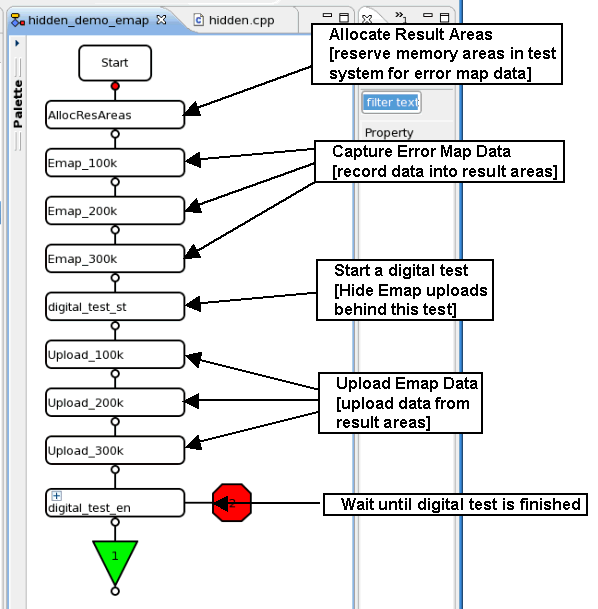

Hidden Error Map Upload
The dual port memory of the test head cards allows to upload data while a functional test is running on the same channel.
Utilizing this feature enables you to upload error map data during a digital test execution. With this you effectively hide the upload of the error map behind a digital test.
This combination of hardware feature and test flow structuring can reduce test time.
The following description gives you an overview of the conceptual approach whereas Hiding the upload of the error map provides a step by step description together with codes snippets.
The figure below shows a test flow example that illustrates how the upload of the error map can be hidden behind a digital test.

The test flow is structured in the following segments:
Allocate result areas
Reserve and name memory space for storing the error map data.
It is recommended that the error map size be minimized for the following reasons:
- To leave space for other tests
- In case a device fails, in which case it may send constant '1', which will fill up the error map completely
- Minimizing the error map size reduces the amount of data to be uploaded
Capture error map data
Configure the error map to your needs, refer to Configuring the Error Map recording and capture the data by executing a functional test.
Start a digital test
In a lot of cases, scan tests or BIST tests are done on digital devices.
These and any other digital test can be used to hide the upload of data.
Perform the hidden upload
While the digital test is running the error map data has to be uploaded.
To ensure that the currently running digital test does not get interrupted, use no nor change primary settings for the uploads.
Wait for digital test to finish
If configured correctly the upload of the error map data should be quicker than the digital test to finish.
In order to be able to judge the result of the digital test and perform data logging one has to wait for the digital test to end.
To ensure that the currently running digital test does not get interrupted, use no nor change primary settings while waiting.
Functional changes
- Introduced in SmarTest 6.5.1